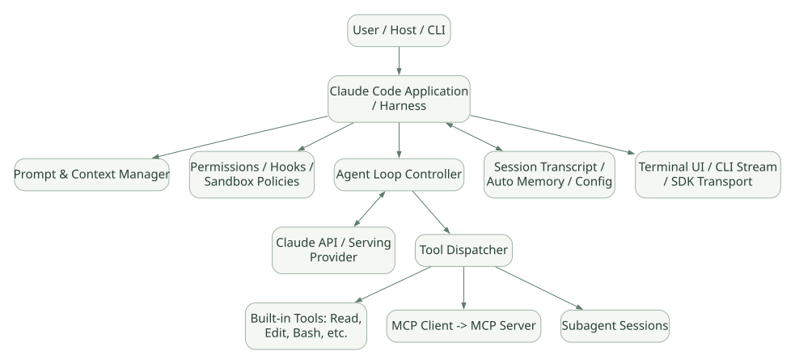

SECOND STUDY / Model·Harness·Host
Model·Harness·Host
이번 단원의 읽는 관점
제어권을 가진 계층과 사용자에게 보이는 상태를 나눕니다.
살펴볼 경계Agent Loop 도식과 의사코드는 공개 코어 구현을 복제한 것이 아닙니다.
이 페이지의 세부 목차
Part I. Claude Code의 소프트웨어 경계와 내부 실행 모델
1. 모델·Harness·SDK·플랫폼의 층위#
Claude 모델은 다음 토큰과 Tool 사용 의도를 생성한다. 파일을 실제로 수정하는 주체는 아니다. Claude Code Harness는 모델과 사용자/환경 사이에 놓여 Tool 정의·인수 전달·정책·세션·컨텍스트·출력을 조정한다. Claude Agent SDK는 이 Harness를 Python/TypeScript/CLI에서 프로그램적으로 사용하는 진입점이다. 호스팅 플랫폼은 프로세스·네트워크·인증·스케줄링·로그 및 작업 공간을 관리한다. DOC[R21][R22]
가로로 이동해서 읽을 수 있습니다. 도식 크게 보기 ↗

원문의 학습용 도식입니다. 연결 방향·분기 조건·점선·쌍방향 연결을 보존해 세로로 배치했습니다. 실제 구현·의사코드·해석의 구분은 본문을 함께 읽으세요.
도식 원문 보기 (Mermaid)
flowchart TB
U[User / Host / CLI] --> A[Claude Code Application / Harness]
A --> CX[Prompt & Context Manager]
A --> PC[Permissions / Hooks / Sandbox Policies]
A --> OR[Agent Loop Controller]
OR <--> LLM[Claude API / Serving Provider]
OR --> TD[Tool Dispatcher]
TD --> BUILT[Built-in Tools: Read, Edit, Bash, etc.]
TD --> MCP[MCP Client -> MCP Server]
TD --> CHILD[Subagent Sessions]
A <--> STORE[Session Transcript / Auto Memory / Config]
A --> OUT[Terminal UI / CLI Stream / SDK Transport]주의: 이 도식은 문서화된 역할 관계를 학습용으로 표현한 것이며, 실제 엔진의 모듈 또는 스레드 경계를 그대로 나타내는 소스 다이어그램은 아니다. [INF]
1.1 비교 대상 분류#
| 대상 | 본질 | 주요 수정 지점 | 소스 내부 공개 범위 |
|---|---|---|---|
| Claude Code | 완성형 코딩·작업 Agent Harness | Instructions, Hooks, Skills, MCP, Plugin, Settings | 핵심 런타임 전체는 비공개 |
| Claude Agent SDK | Claude Code 기반 실행 기능의 프로그램 인터페이스 | Python/TS 코드, SDK 옵션, callback | SDK 래퍼·Transport 상당 부분 공개 |
| Hermes Agent | 완성형 실행 Agent / Harness | Agent 코어·Tool·Memory 등 | 자체 핵심 Python 실행 코드 공개 |
| OpenAI Agents SDK | Agent 실행 SDK | Runner/Tool/Handoff/Guardrail 확장 | Runner 실행 코드 공개 |
| PydanticAI | 타입·Graph 기반 Agent Framework | Agent Graph/Toolset/Capability 확장 | Core 구현 공개 |
| Google ADK | Event·Agent·Workflow Framework | Runner/Flow/Service/Plugin 확장 | Python 실행 코드 공개 |
| Microsoft Agent Framework | Agent Pipeline + Workflow Framework | Middleware/ChatClient/Executor 확장 | Python 실행 코드 공개 |
핵심 설계 논점: 소스 공개 범위는 사용 편의성과 별개이다. 이미 잘 갖춰진 Harness는 개발 시간을 줄이지만, 내부 재시도 알고리즘, Tool 스케줄링, 상태 동기화 규칙을 직접 교체하고 싶은 연구에는 제약이 될 수 있다.
2. 세 가지 Control Plane을 구별하자#
- Model Control Plane: 모델이 어떤 Tool을 호출할지, 언제 답변할지, 무엇을 설명할지 선택한다. 모델은 확률적으로 행동하므로 구조적 정책을 강제하는 데 부적합하다.
- Harness Control Plane: Tool 정의 노출, 호출 검증·권한 승인, 세션 저장, 컨텍스트 압축, Hook 실행, Subagent 시작, Tool 결과의 재주입을 관리한다.
- Host/Infrastructure Control Plane: OS 계정·컨테이너·파일시스템 ACL, 네트워크 격리, 실제 API 인증, 서버 큐, 작업 중지·복구, 감사 시스템 등을 관리한다.
보안의 귀속: "Claude에게 쓰기 작업 금지"라는 프롬프트는 Model Plane의 권고다. 실제 파일 수정 권한은 Harness 권한 검사 및 Host OS 정책에서 강제해야 한다. MCP 서버가 DB에 접속한다면 DB 사용자에게 SELECT 외 권한을 주지 않는 별도 경계가 필요하다. [INF]
3. 한 사용자 요청의 논리적 실행 흐름#
공식 문서는 Agent Loop를 맥락 수집 → 행동 → 검증의 반복으로 설명한다. 이 세 단계를 엄격한 for 루프 세 개로 구현했다는 뜻이 아니다. 탐색 중 도구 호출, 수정 후 추가 탐색, 검증 실패 후 재계획이 섞인다. DOC
| 순서 | 보내는 쪽 → 받는 쪽 | 호출 내용·조건 |
|---|---|---|
| 1 | User → Claude Code Harness | 요청 |
| 2 | Claude Code Harness → Context/State | 로드된 지침·세션·메모리 결합 |
| 3 | Claude Code Harness → Claude Model API | System + Project + Conversation + Tools |
| 4 | Claude Model API ⇢ Claude Code Harness | 텍스트 또는 Tool 요청 |
| alt Tool 호출 | ||
| 5 | Claude Code Harness → Policy/Hook | 권한·Hook·환경 검사 |
| ↳ alt 승인·허용 | ||
| 6 | Policy/Hook ⇢ Claude Code Harness | 허용/수정된 인자 |
| 7 | Claude Code Harness → Tool/MCP | 도구 실행 |
| 8 | Tool/MCP ⇢ Claude Code Harness | 관찰 결과/에러 |
| 9 | Claude Code Harness → Context/State | 도구 결과·상태 반영 |
| 10 | Claude Code Harness → Claude Model API | 업데이트된 대화로 재요청 |
| ↳ ↳ else 거부/승인 대기 | ||
| 11 | Policy/Hook ⇢ Claude Code Harness | 차단 또는 사용자 입력 요구 |
| 12 | Claude Code Harness → Context/State | 거부·대기 정보 반영 |
| ↳ end | ||
| ↳ else 최종 응답 | ||
| 13 | Claude Code Harness ⇢ User | 결과 |
| end | ||
원문의 학습용 도식입니다. 호출 방향과 반복·분기·참고를 순서표로 보존했습니다. 실선 →와 점선 ⇢를 구분합니다. 실제 구현·의사코드·해석의 구분은 본문을 함께 읽으세요.
도식 원문 보기 (Mermaid)
sequenceDiagram
participant U as User
participant H as Claude Code Harness
participant C as Context/State
participant M as Claude Model API
participant P as Policy/Hook
participant T as Tool/MCP
U->>H: 요청
H->>C: 로드된 지침·세션·메모리 결합
H->>M: System + Project + Conversation + Tools
M-->>H: 텍스트 또는 Tool 요청
alt Tool 호출
H->>P: 권한·Hook·환경 검사
alt 승인·허용
P-->>H: 허용/수정된 인자
H->>T: 도구 실행
T-->>H: 관찰 결과/에러
H->>C: 도구 결과·상태 반영
H->>M: 업데이트된 대화로 재요청
else 거부/승인 대기
P-->>H: 차단 또는 사용자 입력 요구
H->>C: 거부·대기 정보 반영
end
else 최종 응답
H-->>U: 결과
end이것은 공식 공개 동작을 설명하기 위한 시퀀스다. 내부 호출함수명, 영속화 순서, 병렬 스케줄링 정책은 공개 코드 없이는 확정하지 않는다. [INF][UNV]
3.1 실행 1회가 끝나는 조건은 단일 조건이 아니다#
| 종료·중단 종류 | 의미 | 다음 행동 |
|---|---|---|
| 모델이 최종 답변을 선택 | 해당 턴의 작업이 완료되었다고 판단 | 사용자에게 답변 표시 |
| 사용자가 중단 | 취소 의사를 전달 | 진행 중 Tool의 실제 취소 여부 별도 확인 |
| 도구 거부 | 정책·사용자 승인 부재·Hook 차단 | 모델에 거부 사실 전달 또는 턴 종료 등 정책 종속 |
| API 제한/연결 실패 | 모델 응답 수신 실패 | SDK/CLI 재시도·오류 상태 표시, 설정 확인 |
| 컨텍스트 한계 | 압축 또는 요청 축소 필요 | 압축 후 계속하거나 오류 |
| 프로세스/호스트 종료 | 실행 중단, 작업 결과 미확정 가능 | 세션 복원 여부와 외부 부작용 확인 |
SDK --max-turns 등 제한 |
상한 도달 | 해당 옵션의 종료 계약 확인 |
| 상위 Hook/자동화 종료 제어 | Stop 또는 추가 검증과 연계 | 종료 지연/차단 한계 확인 |
발표 주의: "Agent는 무조건 작업이 끝날 때까지 돈다"가 아니라, 완료를 판단하는 모델·Harness 제약·호스트 실패가 동시에 종료를 결정한다고 설명해야 한다.
4. 학습용 Agent Loop 의사코드#
다음 코드는 **Claude Code 실제 코드가 아닌 [PSEUDO]**이며, 구현 시 고려할 분기 지점을 명시하기 위한 스케치다.
# [PSEUDO] 공식 Claude Code 내부 함수가 아니다.
async def run_turn(request, session, policy, model, tools):
context = assemble_context(request, session)
while True:
if context.needs_compaction():
context = await compact_and_rehydrate(context)
response = await model.generate(context, available_tools=policy.visible_tools)
if response.final_answer:
if await stop_hooks_allow_finish(response, context):
await persist_session(session, context, response)
return response
context.add_message('completion blocked for correction')
continue
if response.tool_calls:
for call in schedule_calls(response.tool_calls):
decision = await check_permissions_and_hooks(call, policy)
if decision.requires_approval:
decision = await wait_user_approval(decision)
result = await execute_or_reject(decision, tools)
context.append_tool_result(call, result)
continue위 코드로 드러나는 중요한 공백은 schedule_calls, persist_session, wait_user_approval, stop_hooks_allow_finish, compact_and_rehydrate의 실제 구현이다. 공개 Claude Code 코어에서 이 함수들을 찾아냈다는 주장 금지. 이 경계가 바로 자체 프레임워크 개발 시 작성해야 하는 코드의 핵심이다.